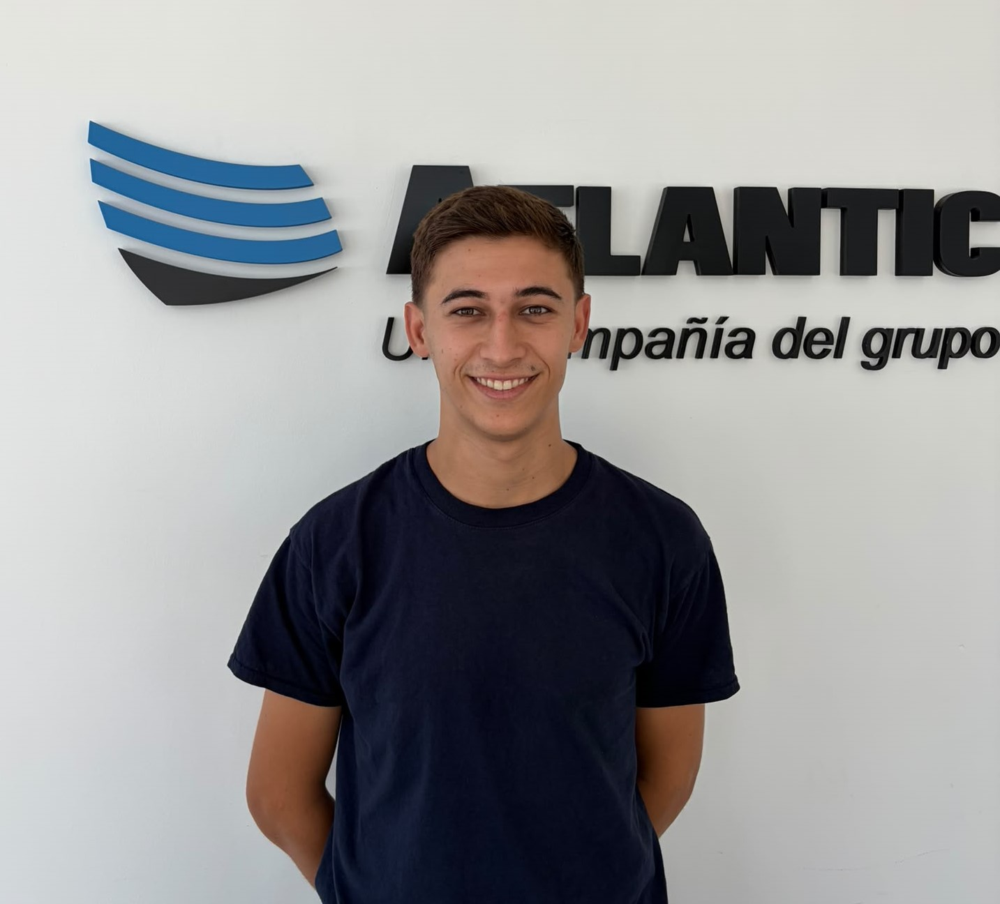

Tu Nombre
Tecnico Superior en Quimica Industrial, responsable, trabajador y con ganas de seguir apendiendo y creciendo profesionalmente. Me adapto con facilidad al trabajo en equipo y afronto nuevos retos con compromiso, iniciativa y motivación.
Certificados
Cursos y formación complementaria. Pulsa sobre un archivo para verlo.